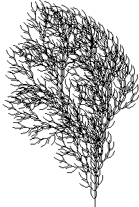
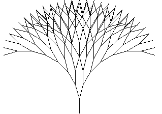
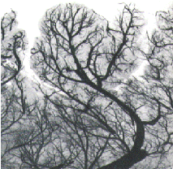
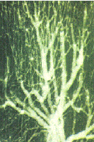

Les fractales
TPE : Baptiste Drapeaud, Gaëtan Milhomme, Hugues Wattez
LE CHOUX ROMANESCO (dimension fractale entre 2 et 3)
On constate que le choux romanesco est d'abord à première vue, entouré de feuilles, mais si l'on se rapproche de plus près on voit des petit cônes qui forment plusieurs spirales, si l'on coupe le choux en deux on observe d'abord de 3 à 8 division sur les branches principales puis des dizaines sur les secondaires (ressemblance avec l'arbre). On peut donc considérer le choux-fleur comme fractale étant donné son auto-similarité sur les branches et les cônes de ce dernier.
|
|
|
|
LA FOUGERE (dimension fractale 1,7)
Je ne m'attarderais pas sur la fougère car à part dire comme beaucoup d'exemple quelle présente une auto-similarité évidente, son intérêt est moindre. Mais elle permet montrer un cas générale des fractales dans les végétaux.
L'origine de la géométrie fractale des êtres vivants dépend tout d'abord du fait, que le végétal à besoin de se développer en usant de la plus grande surface possible pour pouvoir avoir une photosynthèse des plus exigibles, aussi du fait que si le végétal ne se « diviserait » pas sa masse serait trop concentré mettant en danger son développement (grosse perte d'énergie). Sa division dépendra d'ailleurs de son milieu.
Les L-Systèmes quand à eux, est un groupe de symboles qui modélise un processus de croissance. Ce fut d'abord Aristid Lindenmayer qui inventa le concept puis les biologistes s'en sont servie pour pouvoir étudier plus clairement la croissance d'un végétal.
|  |  |
LES POUMONS
La division des poumons, en bronches, en bronchioles... A une ressemblance importante et évidente avec les arbres. Grâce à ces divisions, l'irrigation dans les poumons est décuplé en vitesse (Présence de 8millions d'artérioles dans le corps humains) de plus la géométrie fractale des poumons permettent un gain de surface (l'équivalent de l'aire des poumons et équivalent à une sphère de 2,7 mètres de rayon soit 100 m².
Schéma des plusieurs éléments montrant une auto-similarité
LE RESEAU SANGUIN
Le réseau sanguin qu'il soit issu du réseau coronaire ou autre présente une division de nature fractale (volume fini dans une longueur quasi-infini)
déf : Le réseau coronaire est un ensemble d'artères permettant d'alimenter le cur, il recouvre ce dernier en présentant une forme de couronne d'où son nom.
Auto-similarité évidente du réseau sanguin:
Grossissement 4,5 |
Grossissement 10 |
L'INTESTIN GRELE
L'intestin grêle se situe entre le gros intestin et l'estomac il présente comme les autres exemples une auto-similarité qui paraît à lil nu d'une évidence remarquable. Les ramifications de l'intestin montre encore une fois que ce dernier a une surface fini (surface interne : 300m²) et une longueur infinie à n'importe quelle échelle .
Principales ramifications de l'intestin grêle
Les fractales dans le corps humain ou chez les végétaux permettent un gain d'espace ,pour aider les fonctions des organes ou aider au développement des végétaux (réseau coronaire, perception de loxygène et rejet du CO2 dans les poumons)